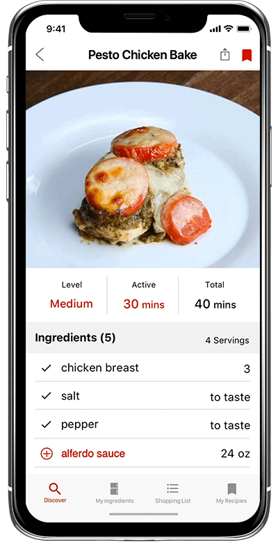

Foodiez
A grocery and recipes management mobile application
Role
UX Designer
Duration
Sep. 2018 - Nov. 2018 (1 Semester)
Type
Course project for Interaction Design course
Tools
Sketch, Principle
About the Project
This is a course project for the Interaction Design course and the final output is a digital prototype for grocery and recipe management app that helps beginner cooks to shorten their food preparation process
Design Process
Final Design
Help beginner cooks manage their food preparation process
Easy ways to build home inventory
Support three ways for user to quickly build a list of ingredients at home, including choosing from the list, uploading a photo of grocery receipt, and searching.

Shorten the time on recipe searching
Solutions:
- Click the NOW tag to get the recipes that user has all the ingredients to make.
- Use different colors to indicate the amount of ingredients user has to cook the dish.
Clear way to inform users of the ingredients they need for a recipe
Solutions:
- A check mark in front of the ingredient to inform user that he/she already has that ingredient at home.
- Allow user to add the ingredients they don't have to the shopping list with just one click.

Easy and simple way to manage the shopping list
Solutions:
- Cross off or delete the item with swipe gesture.
- Add the purchased item(cross-off item) directly to MY INGREDIENTS.